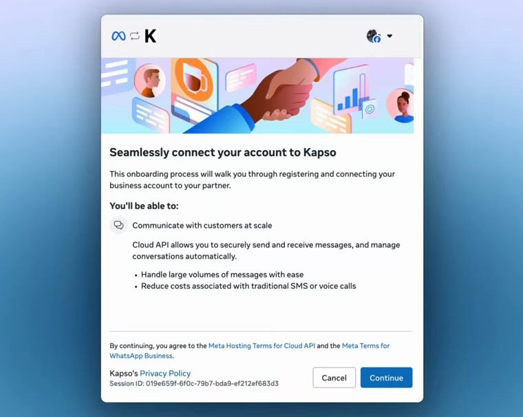
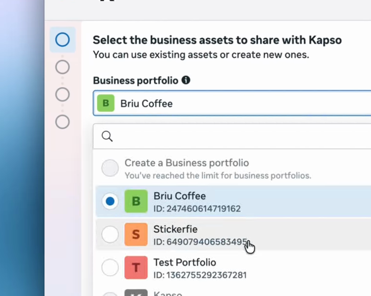
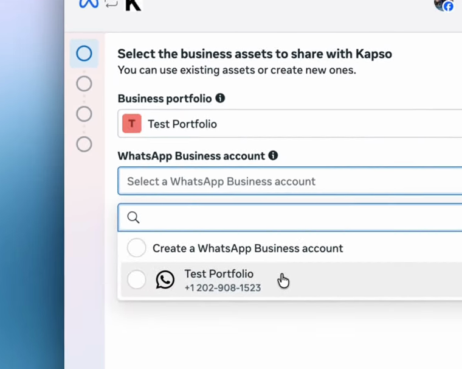
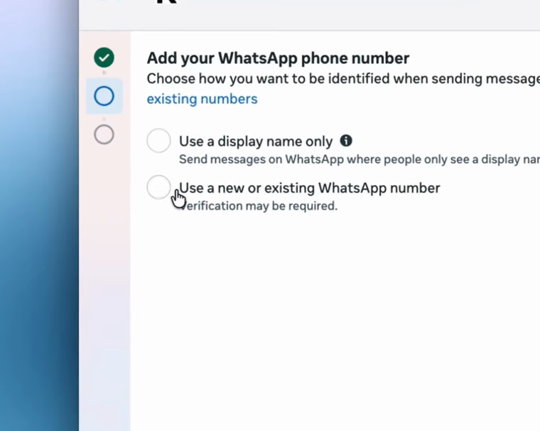
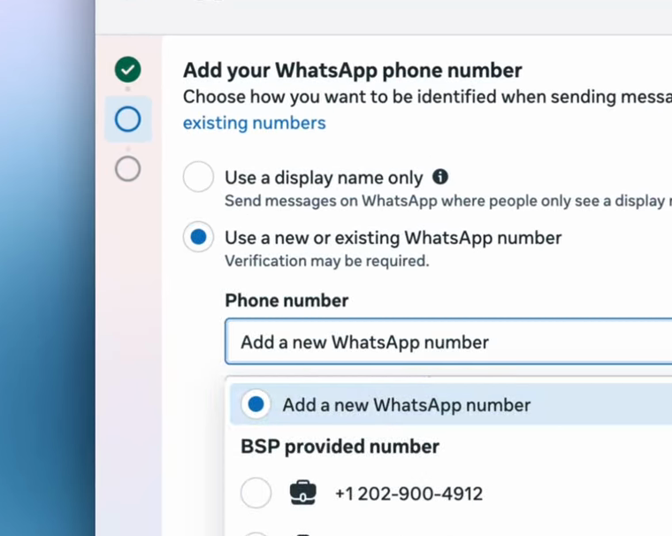
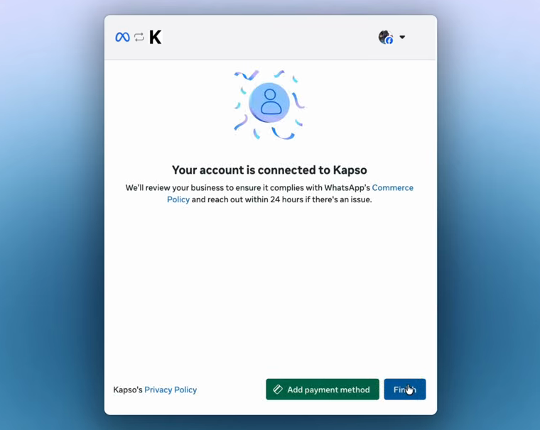
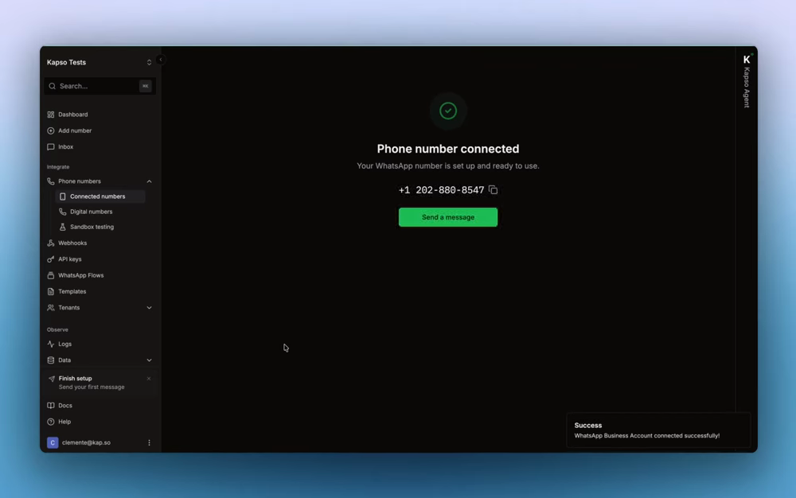

WhatsApp · ИИ-агент
Свой номер WhatsApp для ИИ-агента: пошагово
Как дать агенту на Клоде отдельный номер, чтобы он отвечал клиентам и принимал заявки. Сначала проверка в песочнице, потом рабочий номер
Сначала о границах
- Сервис называется Kapso (kapso.com). Это официальный партнёр Meta*, он подключает официальный канал WhatsApp для бизнеса. Не серый бот и не взлом
- Регистрацию и оплату из России никто не проверял. Инструкция для тех, кто работает с зарубежными клиентами
- Писать можно только тем, кто сам дал согласие на сообщения
- Правило 24 часов: пока с последнего сообщения клиента не прошли сутки, агент отвечает свободным текстом. Позже - только шаблонами, которые одобрила Meta
- Бесплатный тариф Kapso: 2000 сообщений в месяц, входящие и исходящие вместе, один номер. Остаток на следующий месяц не переносится. Платный Pro - $25 в месяц
- Важно: это лимит самого Kapso. Meta берёт плату за сообщения отдельно. Большинство шаблонных сообщений платные уже сейчас, а с 1 октября 2026 года платными станут и обычные ответы клиенту в течение суток. Цена зависит от страны клиента
- Рабочий номер от Kapso отдельный. Новичку на бесплатном тарифе его могут дать бесплатно, один раз и только в первом проекте, в остальных случаях просят небольшой депозит на счёт проекта. Песочница из шага 1 бесплатна всегда
Источники: kapso.com/pricing · docs.kapso.ai/docs/whatsapp/pricing-faq · статус партнёра Meta
Шаг 1. Проверить в песочнице, без карты и без Meta*
- Зайди на app.kapso.ai и создай проект
- Открой WhatsApp → Sandbox и нажми Add Test Number
- Укажи свой номер WhatsApp, с которого будешь проверять, и нажми Create
- Появится код из 6 символов. Нажми Open WhatsApp и отправь этот код сообщением. Код живёт 15 минут. Если время вышло, создай сессию заново
Теперь можно писать и получать сообщения через Kapso и смотреть, как всё устроено. Песочнице не нужен бизнес-аккаунт Meta и карта
Источники: kapso.com/whatsapp-api-sandbox · docs.kapso.ai: песочница
Шаг 2. Рабочий номер
Приготовь заранее, иначе Meta остановит подключение на полпути:
- аккаунт Facebook (это тоже Meta*) и доступ к Business portfolio. Это бизнес-кабинет Meta, в котором живут страницы и аккаунты компании
- данные компании в этом кабинете: юридическое название, адрес, телефон и сайт с адресом на https://
- в кабинете не должно висеть непройденных проверок, долгов по оплате и предупреждений
- В Kapso открой Connected numbers → Connect new number → Instant setup
- Выбери номер от Kapso (Kapso-provided). Это номер США, за него просят небольшой депозит. Бесплатный номер дают один раз, только на тарифе Free и только в первом проекте. Если по нему 30 дней не было рабочих сообщений, номер забирают
- Откроется окно Meta. Нажми Continue, выбери свой Business portfolio и аккаунт WhatsApp Business, существующий или новый

Окно Meta: жмёшь Continue. Скрин из документации Kapso 
Выбор Business portfolio. Скрин из документации Kapso 
Выбор аккаунта WhatsApp Business. Скрин из документации Kapso - На экране Add your WhatsApp phone number выбери Use a new or existing WhatsApp number. Первый пункт, Use a display name only, не выбирай: с ним номер может перестать работать уже через несколько сообщений. Дальше в списке Phone number - BSP provided number (это номер, который выдаёт партнёр Meta, то есть Kapso), потом Next. На последнем экране Meta нажми Finish

Экран Add your WhatsApp phone number: второй пункт. Скрин из документации Kapso 
В списке Phone number выбираешь BSP provided number. Скрин из документации Kapso 
Последний экран Meta: аккаунт подключён, жмёшь Finish. Скрин из документации Kapso - Вернёшься в Kapso, номер будет отмечен как подключённый

Номер подключён. Скрин из документации Kapso
Без SIM и кодов номер подключается, если в пуле Kapso есть свободный номер. Если Meta попросила код по SMS или звонку, это ручная регистрация номера, а не быстрая. Закрой окно Meta, снова запусти Instant setup в Kapso и на шаге с номером выбери номер под BSP provided number. Новый номер вручную не вписывай. По инструкции Kapso на всё уходит около 5 минут, плюс проверки Meta
Свой номер тоже можно подключить: понадобится код по SMS или звонку. Если у тебя уже есть приложение WhatsApp Business, его можно оставить на телефоне и подключить тот же номер через QR-код
Источники: docs.kapso.ai/docs/how-to/whatsapp/connect-whatsapp · docs.kapso.ai: если что-то пошло не так
Шаг 3. Автоответ без кода
- В панели Kapso открой Workflows и создай сценарий, с нуля или из шаблона. Сценарий - это схема из блоков: что происходит, когда клиент пишет
- Добавь блок start (начало) и блок agent (сам ИИ-агент) и соедини их стрелкой: сценарий идёт только по стрелкам. В блоке agent выбери в списке моделей Claude и напиши, что агент делает: например, «отвечай на вопросы о товаре и присылай ссылку на заказ»
- Сразу там же дай агенту знания о магазине: список товаров, цены, что есть в наличии, ссылки на заказ. Без этого он начнёт угадывать и может пообещать клиенту то, чего нет
- В панели триггеров (это «когда запускать») добавь входящее сообщение для своего номера. Рабочего номера ещё нет - выбери Sandbox WhatsApp, и агент будет отвечать тебе в песочнице из шага 1
- Проверь сценарий в тестовом окне, сохрани и включи. Пока сценарий в статусе Draft (черновик), на сообщения он не отвечает
Несколько языков: допиши агенту «в первом сообщении предложи выбрать язык: English, Deutsch, Русский, Français, и дальше отвечай только на выбранном». Клиенту сразу понятно, что можно писать на своём языке
Источники: docs.kapso.ai/docs/workflows/build-in-canvas · docs.kapso.ai: блок agent
Шаг 4, по желанию. Пусть интеграцию пишет Клод
Этот путь для тех, кто работает в Claude Code - в обычном чате claude.ai команда не сработает
- В Kapso открой API keys в меню слева и создай ключ. Это пароль, по которому Клод сможет работать с твоим номером. Никому его не показывай
- Открой папку проекта в Claude Code и отправь ему эту фразу. Если Клод скажет, что нужен Node.js, попроси его поставить
Поставь навыки командой npx skills add gokapso/agent-skills. Потом подготовь файл .env с двумя строками: KAPSO_API_BASE_URL=https://api.kapso.ai и KAPSO_API_KEY= (пустое значение). Ключ я вставлю туда вручную, в чат его не присылаю
Поставятся три навыка: подключение и сообщения, сценарии и агенты, журнал ошибок доставки. Открой файл .env и после KAPSO_API_KEY= вставь ключ из Kapso. Дальше пиши обычными словами, например:
Собери агента для WhatsApp для моего магазина. Первым сообщением он предлагает выбрать язык, отвечает на вопросы о товаре и присылает ссылку на заказ. Список товаров, цены и ссылки возьми из файла, который я приложу. Номер возьми из моего проекта в Kapso
Источник: github.com/gokapso/agent-skills
Формы прямо в чате
WhatsApp Flows - анкета внутри переписки, как на сайте: имя, что интересует, когда удобно созвониться. Клиент тыкает в поля и кнопки, ответы приходят в Kapso готовой заявкой. Формы живут в разделе Flows в меню Kapso. Без кода проще всего попросить собрать форму встроенного помощника Kapso Agent (он тратит ИИ-кредиты проекта, кончатся - остановится) или Клода с навыками из шага 4. Отправить форму можно в течение суток после сообщения клиента, позже - только через одобренный шаблон с кнопкой. Чтобы опубликовать рабочую форму, бизнес-кабинет Meta должен пройти проверку
Источники: kapso.com/whatsapp-flows · docs.kapso.ai: Flows
Если что-то не работает
- Сообщение не дошло - открой Logs в меню Kapso, там видна история каждого запроса и ошибки
- Агент молчит - проверь, что сценарий включён, а не в статусе Draft, и что блоки соединены стрелками
- Клиенту нельзя написать первым - это правило Meta, без его согласия и одобренного шаблона не получится
Бесплатный практикум
Бот в WhatsApp - один помощник. А можно собрать целую команду
Номер и автоответ - это одна задача. ИИ-Лагерь - бесплатный трёхдневный практикум, где показывают, как вообще работать с Claude Code и Codex (это ИИ-агенты от Anthropic и OpenAI): что они умеют и как собрать с ними своё - бота, сайт, инструмент для своего дела. Без программирования: каждый шаг показывают на экране, ты повторяешь
Хочу на бесплатный практикум*Meta признана экстремистской организацией и запрещена в РФ